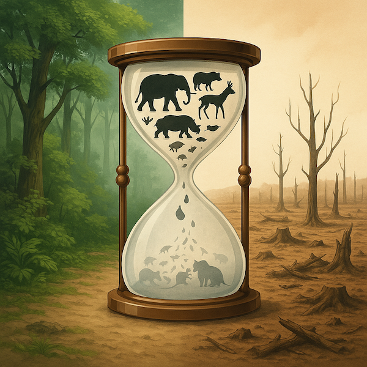
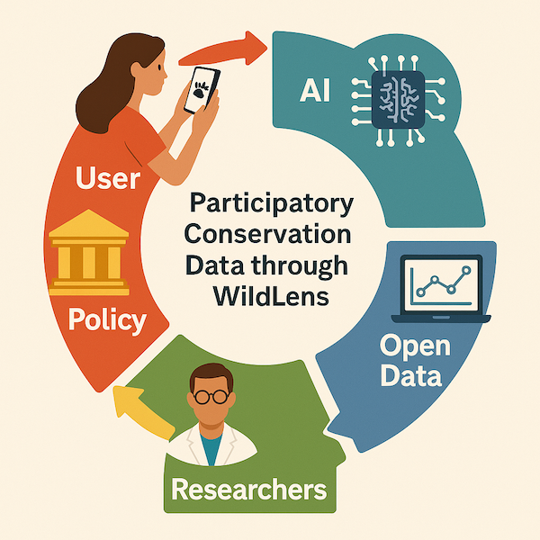
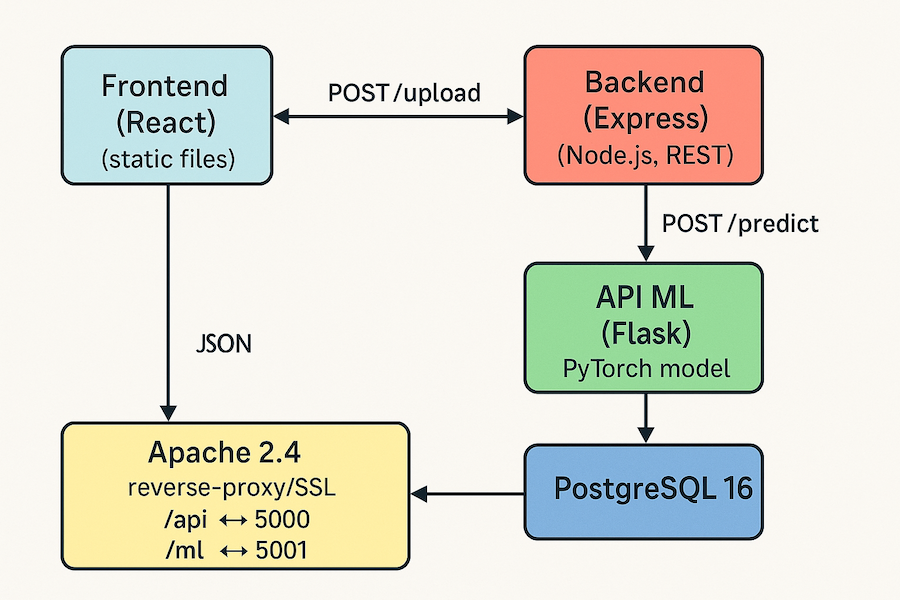
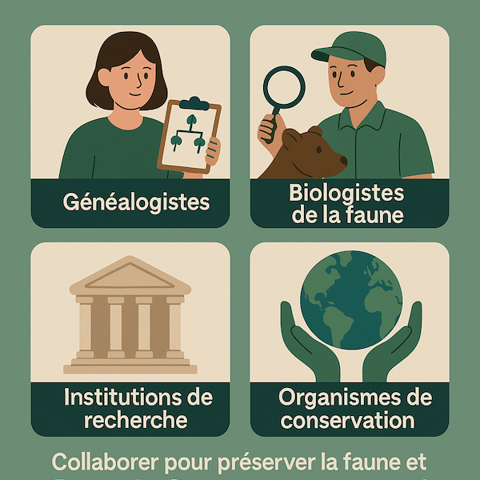
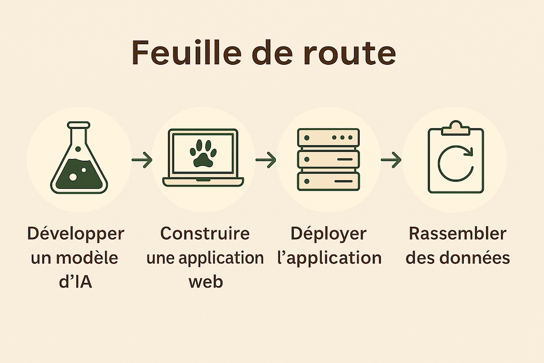

Cartographier la biodiversité ensemble
Crise de la biodiversité
- 3–4 espèces disparaissent chaque heure (IPBES 2023)
- 150–200 nouvelles espèces découvertes chaque année
- Sans données fiables, on avance « dans le brouillard »
Défis & conséquences
- Érosion accélérée → perte de services écosystémiques
- Suivi traditionnel coûteux et lent
- Participation citoyenne limitée → faible couverture
Architecture WildLens
Une chaîne open‑source complète : React · Express · PyTorch · PostgreSQL · Apache/SSL
Science participative
- Capture → IA identifie l'espèce
- Données ouvertes FAIR
- Chercheurs analysent → Politiques agissent
Bénéfices pour tous
- Biologistes
- Parcs nationaux
- Universitaires
- Citoyens
- Pouvoirs publics & ONG
Feuille de route
- IA multi‑espèces (20 à 200)
- Capteurs LoRa
- Gamification & défis
- Alertes invasives
- Interopérabilité GBIF / iNat / eBird
Agissons ensemble !
Partagez vos photos, validez les observations, contribuez à la carte mondiale.